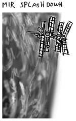
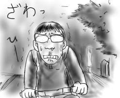

大宮Book Offから抜いて来たジョン・ヴァーリィ『へびつかい座ホットライン』(早川SF文庫)が滅法おもしろいモジャ(今さら)！章が進む度に次々と新しい未来ビジョンが現れて圧倒されます．こんなのが僕が3歳の時に出版されてたなんて信じられない．それにしても，アイデアの詰め込みぶりと，この冗長性のないページ数はすごいなぁ．
今年は曇天かつ小規模なため，しし座流星群がさっぱり見えません．これじゃ黄昏流星群です．青年漫画のジャンクフードですよ．
せめてWeb力(ちから)でうまく撮影されたものを見ようといろいろ検索しているうちに，宇宙ステーション「ミール」が最後に地球に送って来た画像を発見し，思わずこみあげました(弱)．ただ壊れるためだけに頑張ってる機械というのは，それだけでグッと来ます．

ただ死ぬためだけに頑張っている人間じゃ，そうはいかない．
土曜日に暗黒同期の飲み会があり，楽しく過ごしたのですが，帰宅してから妙に体調が悪く，日曜日は家で安静にしてました．別の言葉で言うと引きこもりです．
何かが憑いたのかと思うくらい体が重かったのですが，多分，先日の徘徊で何かがナニしたのだと思います．母ちゃん勘弁．
しかし，一晩寝ると体調も回復したので，予定通り有給を消費(-1)して「TRICK劇場版」を鑑賞してきました．
感想: 由紀恵を返せ
冒頭から中盤までは本気で笑い死ぬかと思いました．山田奈緒子(仲間由紀恵)が飲食店で依頼を受けるシーンがあまりにくだらなさすぎて最高！モンティ・パイソン並のくだらなさだ！(褒)
あちこちのメディアで堤監督が述べていたように，本当にスケールがちっちゃくて，TV版だと２話でやるのを映画１回でやった感じなのですが，前半の大風呂敷に比べて，一応全部つじつまは合ってるけどそれでいいのか？みたいな解決編の弱さがTRICKの持ち味だと思うので，問題はないかと思います．
後半は総じてラブっぽかったので，思わず映画館で照れてしまいましたよ．いい大人が．このまま付かず離れずで行くのかよ！(goto 感想)
ゲームボーイアドバンスの超目玉タイトル(個人的)「魂斗羅ハードスピリッツ」を購入したよ．
SFC初期の名作「魂斗羅スピリッツ」とメガドラ後期の迷作「魂斗羅・ザ・ハードコア」のハイブリット作品です．簡単にいうとリメイクです．帰宅してさっそく始めたところ，１面で全滅．もう…全部…忘れちょるばい…(架空方言)．
地道に思いだしながら４面くらいまでは進めるようになったので気付いたのですが，このゲーム，途中セーブがない上にパスワード制(18桁の英字)という漢らしさが光ります．もちろんパスワードは面をクリアしないと表示されません．喧嘩売ってるとしか思えないね．
結局ほとんどの部分が「魂斗羅スピリッツ」なのですが，「魂斗羅・ザ・ハードコア」から移植された2面の異常さがやはり際立っています．暴走列車を走って追いかけて来た巨大人型ロボYOKOZUNAが力任せに電車を止め，よじ登って来たかと思うと16文キックをくらわせる様に胸が踊ります．
斜めが入っていると何かにぶら下がった状態から下に降りられなかったり，当たり判定が自キャラをはみ出していたりするので，気を抜くとすごい勢いで死ねます．武器切り替えがなくなったので難易度も上昇している気がします．僕は「魂斗羅・ザ・ハードコア」のスライディング(無敵)と無茶な武器(超電磁ヨーヨーとか)を使いこなすゲーム性の方がよかったです…．
というわけで，結論から言うと「ドラえも〜ん，魂斗羅スピリッツコア出してよ〜」ということになるのですが，アクションゲームで久しぶりの死んで覚えろゲーなのでまぁそれなりに楽しいです．
ところで，目玉の一個上はなんで大目玉と言わないのだろう．
会社帰り，なんとなく気分転換に脇道へそれてみることがよくあります．
街頭一つない路地．灯りの落ちた民家．非常灯で内側から緑に発光する校舎．ドブ川の匂い．朽ち果てたブロック塀．そして，夜空よりも暗い森，木々のざわめき…．
次から次へと現れる虚ろスポットで，人間の恐怖の根源が「闇」であることをまざまざと思い出すことが出来ます．自転車を漕ぐ足にも自然と力が入り，冷や汗が背中を伝います．

しかし，本当の恐怖は，これだけの大冒険をこなした後で元の道に合流しても，脇道へそれた地点から50mも離れていないという事実でしょう．僕は異次元を彷徨っていたのに違いありません．もしくは岩槻が魔界であるかのどちらか．
MacOSX10.2.2にupdateしたところ，Emacs21 for MacOSX(web)が動かなくなりました．どうにもbuildし直さないとダメなようです(emacs -nwで起動するとbus errorで落っこちます)．
ところがcvsから最新バージョンを引っ張って来てmakeしても，cc-mode.elのバイトコンパイルでエラーになって止まってしまいます．結局，2002-11-04のバージョンをチェックアウトするとうまく行くようです．２ちゃんねるは，こういう事態に関しては異常に便利だと思います．
あと，なぜか日本語ボールドフォントはかなフォントになっていて漢字が□のような白抜けになってしまうので，~/.emacsに以下のように書いてボールドフォントに，デフォルトフォントと同じ物を設定してやりました．なんか釈然としないけど仕方ありません．ちなみにosaka-boldを指定するとうまく行きそうに思えますが，やっぱりかなフォントになります．フザケンナ．
(set-face-font
'bold
"-apple-osaka-medium-r-normal--12-120-75-75-m-120-jisx0208.1983-sjis")
(set-face-font
'bold
"-apple-monaco-medium-r-normal--12-120-75-75-m-120-mac-roman")
ちなみにC-u C-x = でカーソル位置の文字情報が見られます．(insert (prin1-to-string (x-list-fonts "*")))をevalすると使用可能なフォントの一覧が出ます．今日の日記は完全に自分用メモです(すいません)．
というわけで無事Emacs環境が復活したのですが，問題はMacOSX10.2.2にupdateした時点ですでに夜中の3時を回っていたという驚愕の事実です．安心するのも後回しに，白み始めた夜空に背を向けて布団にすべり込みます．
朝，遅刻しそうになっていると会社の人が「さぁミズグチくん，会社に行くよ」と車で迎えに来てくれる，という大変自分に都合の良い夢を見て目が覚めました．我ながらたいしたものだと思います．会社には間に合いましたが，果たして自分の成果か，会社の人のおかげか，悩むところです．
(後日追記：最新版でmake通るようになってました)